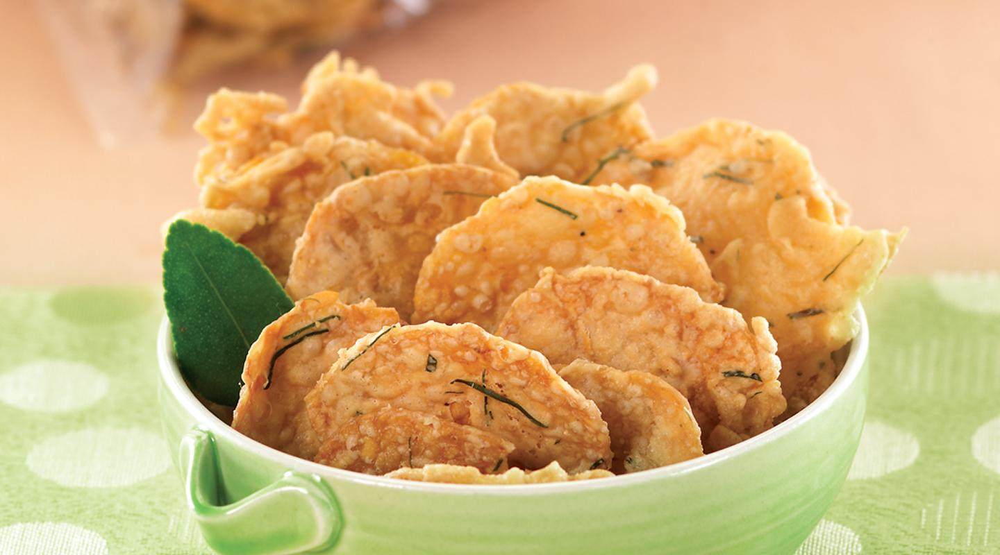
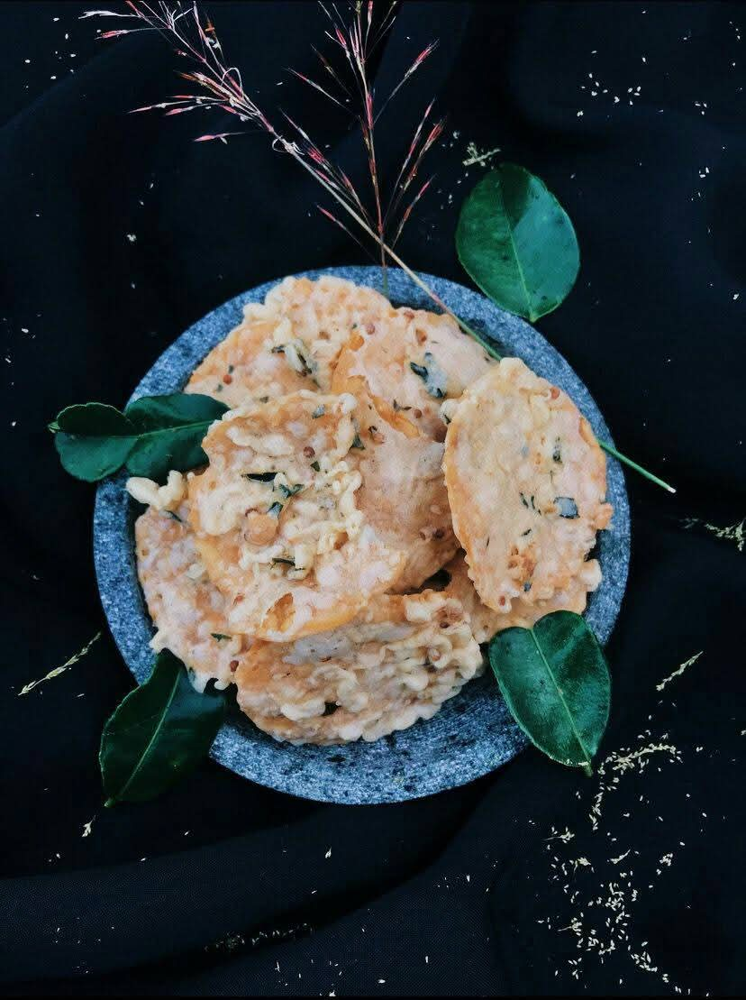
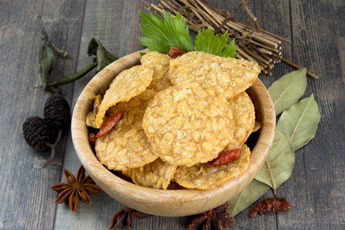

Keripik tempe tradisional khas Indonesia, dibuat dengan sepenuh hati di Blitar. Renyah, gurih, dan dipenuhi aroma harum daun jeruk segar.

Kenali kisah di balik keripik tempe renyah favorit Indonesia.

Keripik Tempe Lancar Abadi adalah camilan tradisional khas Indonesia, diolah dengan teliti dari tempe pilihan dan dipadukan dengan aroma harum daun jeruk asli. Setiap gigitan menghadirkan perpaduan sempurna antara kerenyahan dan cita rasa.
Varian andalan kami — pilih ukuran yang paling pas untuk Anda.
Keripik tempe buatan tangan dengan sentuhan daun jeruk segar. Camilan renyah yang pas untuk segala suasana.
Kami siap menjadi bagian dari momen istimewa Anda dengan keripik tempe terbaik.

Keripik Tempe Lancar Abadi melayani pesanan dalam berbagai skala — mulai dari kebutuhan pribadi hingga acara besar. Dengan kualitas renyah dan rasa khas yang konsisten, keripik kami jadi pilihan tepat untuk memeriahkan setiap momen.
Beli satuan untuk camilan harian keluarga atau stok di rumah.
Suguhan istimewa untuk tamu pernikahan, khitanan, dan acara keluarga.
Pelengkap hidangan untuk berbagi kebahagiaan bersama kerabat.
Arisan, pengajian, rapat, seminar, atau oleh-oleh khas Blitar.
Ulasan asli dari pelanggan setia kami di Blitar.
“Renyahnya luar biasa! Aroma daun jeruknya benar-benar khas. Sudah jadi langganan keluarga di rumah.”
“Rasanya otentik banget, sangat direkomendasikan! Cocok jadi oleh-oleh khas Blitar.”
“Sekali coba langsung ketagihan. Tipis, gurih, dan kriuknya pas — selalu pesan ukuran 1 kilo.”
“Camilan favorit di kantor. Kemasannya rapi dan rasanya konsisten. Mantap!”
Kami siap melayani Anda dengan ramah dan sepenuh hati.
Jl. Rayung Wulan No.3, RT.3/RW.4, Blitar, Kec. Sukorejo, Kota Blitar, Jawa Timur 66123
Senin – Minggu
06:35 – 21:36